# A tibble: 6 × 10
business_id name neighborhood city state postal_code stars review_count
<chr> <chr> <chr> <chr> <chr> <chr> <dbl> <int>
1 PfOCPjBrlQAnz__… Bric… "" Cuya… OH 44221 3.5 116
2 PfOCPjBrlQAnz__… Bric… "" Cuya… OH 44221 3.5 116
3 PfOCPjBrlQAnz__… Bric… "" Cuya… OH 44221 3.5 116
4 PfOCPjBrlQAnz__… Bric… "" Cuya… OH 44221 3.5 116
5 PfOCPjBrlQAnz__… Bric… "" Cuya… OH 44221 3.5 116
6 PfOCPjBrlQAnz__… Bric… "" Cuya… OH 44221 3.5 116
# ℹ 2 more variables: is_open <int>, categories <chr>Introduction
For those who know me, it’s no secret that I love food. Whether it’s a bowl of ramen, delicious BBQ or a (half-dozen)warm cookie, if there is food to be tried, I want to try it. With that in mind, imagine how excited I was when I learned that Yelp had an enormous dataset to play with. If you are unfamiliar, Yelp is a website devoted to reviews of just about any sort of business you can think of – restaurants, gyms, barbers, doctors, etc. With these reviews, users of the site are able to choose establishments to visit with more confidence that their hard earned dollars are going to be well spent.
The Yelp dataset, specifically, is a (seemingly) complete subset of Yelp data from selected cities in North America and Europe. It includes information about businesses and users from the selected cities as well as review, checkin, and tip data. There are also additional files with the photos people have uploaded to Yelp . To put it bluntly, it’s a lot of fucking data. All told, it’s about 15GB worth of information. Even more incredible still, it’s pretty much current data–right now it goes through the end of 2017, but they keep updating the dataset, so I’d imagine we’ll start seeing 2018 data in a couple months. I can’t overstate how exciting it is to have access to this sort of data.
Finding this dataset was quite nice timing since I have been looking for a nice end to end project for a couple weeks. Over the next couple weeks, I plan on analyzing, modeling and, ultimately, building a simple web app to showcase the model. The Yelp dataset seems perfect for this– personally interesting data, a non-trivial amount of data processing, and, most importantly, a wide range of modeling topics to choose from. With all that intro, let’s take and look at the data and get started!
Problem Formulation
While there are gobs of information in this dataset, right from the start the reviews stood out to me. I think natural language processing is a fascinating area and, while I have a good handle on how things are done, I haven’t gone end-to-end with a state of the art NLP system. How lucky that I have 5 million+ text reviews at my disposal now(insert evil laughter?)
The NLP field has come a long way in the past couple years. The use of recurrent neural networks(RNN) and long short-term memory networks(LSTM) to model language has generated expressive, contextually sophisticated models that can do everything from generating new context specific text to classifying comments as toxic. This got me wondering whether you can accurately classify a text review as a good or bad review. Taken one step further, can you accurately predict whether a text review is a 1-5 star review? A human will read a review and intuitively recognize the review structure, word associations and subtle features of language such as sarcasm. It’s a tall order to think you can model all of that nuance, but neural networks can create enormously rich models, so let’s give it a shot. First though, I want to explore the dataset to get a sense of what I am working with.
Initial Data Analysis
With such a big dataset, I want to get a feel for the data first. Let’s have a look at the business table to see how the data is structured. (Note: Initial cleaning was performed in the read_data.R script which can be found in the repo for this project. The files were all json files–with some added wrinkles–so it’s worth checking that out if you are curious.)
During the initial cleaning, I removed all non-US businesses and all businesses that did not have the ‘restaurant’ tag in the category section. This left about 100,000 rows of data. There are only 32,277 unique restaurants, so what are the other rows? Since almost every restaurant is tagged by multiple categories, the additional rows are duplicate rows of restaurant X to enumerate all the categories for said restaurant. Note that the restaurant filtering didn’t end up being as exclusive as I would have hoped. Many ‘restaurants’ were tagged with non-food related categories, but since they also included a restaurant tag, they’ve been included. Hingetown restaurant in Ohio, for instance, is tagged as a museum and florist as well as a restaurant.
| name | categories |
|---|---|
| Hingetown | Shopping |
| Hingetown | Flowers & Gifts |
| Hingetown | Arts & Entertainment |
| Hingetown | Cafes |
| Hingetown | Coffee & Tea |
| Hingetown | Local Flavor |
| Hingetown | Museums |
| Hingetown | Shopping Centers |
| Hingetown | Art Galleries |
| Hingetown | Florists |
| Hingetown | Food |
There’s not a whole lot I can do here, and since Yelp is OK with this sort of classification scheme, I will be too.
How are restaurant ratings distributed?
Since my ultimate goal is to predict restaurant ratings from the text of reviews I’m going to focus my analysis on the reviews and the ratings to make sure I have a good understanding of the data before I start modeling. In that spirit, what does the distribution of restaurant ratings look like?
Overall
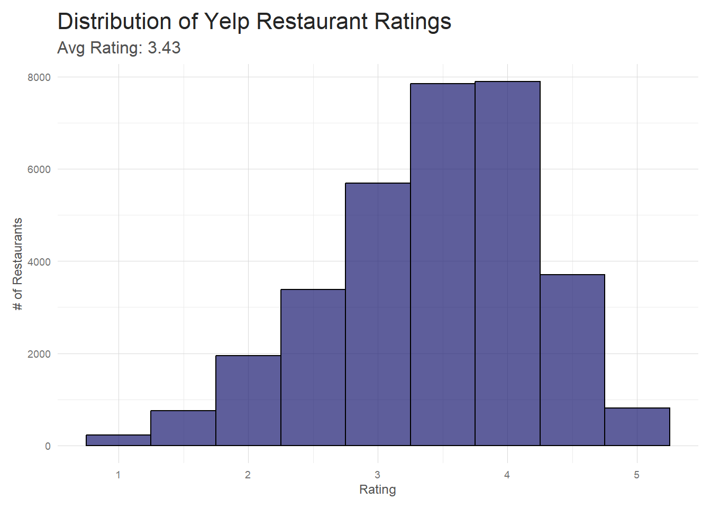
The overall shape of the distribution is about what I expected. I imagine that most restaurants that hover around the 1-2 star range don’t stay in business very long, so they aren’t very well represented here. And even the best restaurants have off nights and off customers, so it’s not surprising that there aren’t a ton of 5 star restaurants.
By State
Does this distribution look different state to state? If I filter out the states that only have a small number of restaurants, the distributions look pretty similar state to state. All state distributions are negatively skewed with very similar averages. Just from a first look, it doesn’t seem like you see a lot of variation in how state’s restaurants are rated.
Code
# From initial plots, I know many states are included that have only
# a handful of reviews. Eliminate these from plotting since they don't
# contain enough data to plot meaningful distributions
df <- data.frame(state = c("AZ", "NC", "NV", "OH", "PA", "WI"),
full = c("Arizona", "North Carolina", "Nevada", "Ohio", "Pennsylvania", "Wisconsin"))
avgs <- restaurants%>%distinct(business_id, .keep_all = TRUE)%>%group_by(state)%>%select(stars)%>%summarise(avg =round(mean(stars), 2))
df <- inner_join(df, avgs, by = 'state')
# Hackish way to put avg rating on plot facets
df <- bind_cols(df,
pos = data.frame(y = c(2000, 750, 1500, 1000, 750, 325)))
restaurants%>%
# remove duplicate businesses (from the categories ennumeration)
distinct(business_id, .keep_all = TRUE)%>%
filter(!(state %in% c('AK', 'CA', 'CO', 'IN', 'NY', 'VA', 'IL', 'SC')))%>%
# join my avg's df to be used for facet labeling
inner_join(df, by = 'state')%>%
group_by(full)%>%
ggplot(aes(stars))+
geom_histogram(fill = 'midnightblue', color = 'black', alpha = .7, bins = 9)+
facet_wrap(~full, scales = 'free')+
my_theme()+
labs(x = 'Ratings',
y = '# of Restaurants',
title = 'Distribution of Yelp Ratings by State')+
geom_text(data = df,
aes(x = -Inf, y = y, label = paste0("Avg Rating: ", avg)),
hjust = -0.1,
vjust = -1,
size = 2.5,
family = 'AvanteGarde')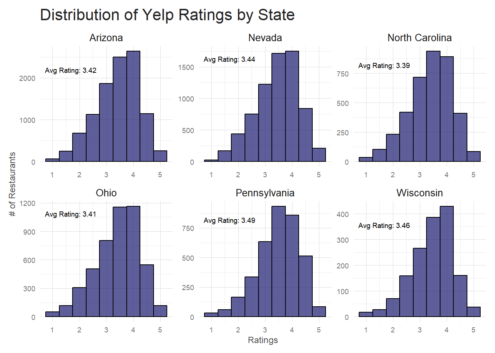
By Category
When I look at how ratings are distributed by category, I start to see some variation. Below are the 6 most common restaurant categories and their ratings distributions. While ‘Food’ and ‘Sandwiches’ look similar to the distributions I have seen so far, ‘Fast Food’ is quite different. The skew is reversed–a majority of restaurants have 2-3 star ratings instead of 3-4– and the distribution is much wider. ‘Bars’ and ‘Nightlife’ are narrower distributions with more pronounced peaks and ‘American’ is much closer to normal than the others.
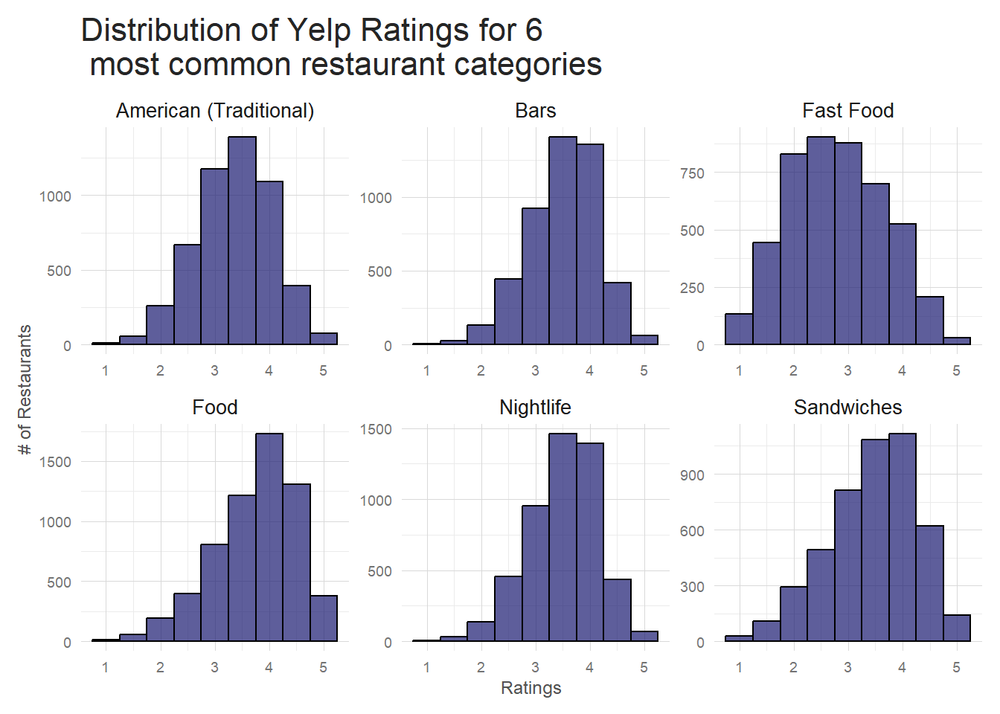
| categories | avg | var |
|---|---|---|
| American (Traditional) | 3.36 | 0.50 |
| Bars | 3.51 | 0.42 |
| Fast Food | 2.79 | 0.79 |
| Food | 3.75 | 0.59 |
| Nightlife | 3.51 | 0.42 |
| Sandwiches | 3.45 | 0.68 |
The data in the table is exactly what’s visible in the plot. ‘Fast food’ has a lower average rating with the highest variance and ‘Bars’ and ‘Nightlife’ have the lowest variance of all the categories included. Variance in data is a good thing here as it indicates restaurant categories are a useful predictor of restaurant ratings. I can explore this idea a bit more by taking a look at the highest variance restaurant categories and comparing to the lowest variance ones.
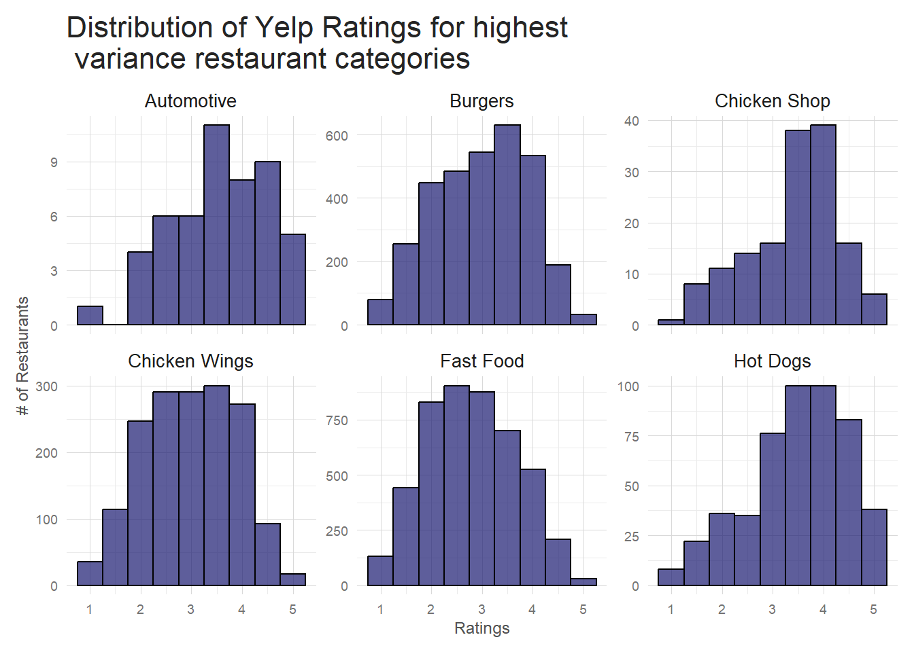
Notice that automotive is high variance, but the number of restaurants with the automotive tag is very low, so it’s very possible that this distribution doesn’t have enough data to be trustworthy. The others make sense though– at least in my opinion. Aside from automotive, these are all fast, casual food types where you can see a wide variety of customers and a wide variety of quality. A good burger to one person is awful to another just because of the peculiarities of taste.
Conversely, if I look at low variance categories I see they tend to be more niche. My guess is that the clientele at these sort of restaurants knows, generally, what to expect, and so they are less often ‘surprised’ (in both good and bad ways) by the food. That’s just speculation though, so who knows. Note: the low variance plot is actually a sample of the low variance categories because there are ~30 categories with a similar variance at the low end. Make sure you use the same seed I did if you want to replicate the plot.
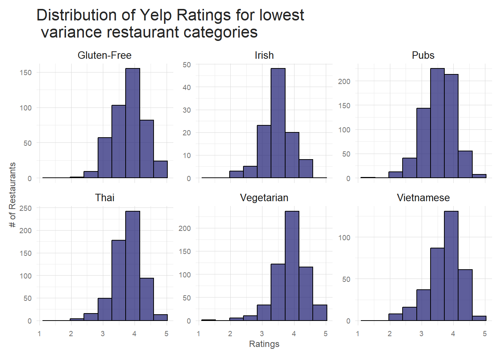
This variation by category makes some intuitive sense and is something that could be included in a standard regression sort of ratings prediction algorithm. I probably won’t extend the NLP based predictions to include outside variables such as categories, but it could be done and is something that should certainly be looked at if you were looking to really fine tune your model. For now, it’s enough to say that there is a relationship between restaurant category and restaurant rating.
Alternative plot for Categories
While viewing the distribution this way is informative, ultimately I’m using the overall rating for all restaurants of category X to build the plots. I actually have individual review level data though, so I should take advantage of it. I can gather up the many thousands of reviews about, for instance, Chinese restaurants and use those to display the breakdown of each categories reviews. This will give a nice tidy view of how reviews of each restaurant category vary.
There are over 600 unique categories, so first I have to find the most common categories and filter down the dataset. Here I choose categories in the top 72%(because that made the prettiest plot!), but you could play around with any number to make a plot to your liking. From there, it’s just a matter of grouping the restaurants by category and rating to get review totals and then using that information to calculate averages for each category. Simple, right?
The final plot below is ordered by average category rating–the top category has the highest average rating and the bottom the lowest. You can see from this the higher the average rating, the higher the proportion of 4 and 5 star reviews. This is something that intuitively we know, but the plot hammers home the point.
Code
# Select a color palette for the plot
colors = c(brewer.pal(9, 'PuBu')[c(5, 6, 7, 8, 9)])
# I need information from both df's so I join them on business_id
joined_df <- inner_join(restaurants, sample_reviews, by = 'business_id')
t <- joined_df %>%
# Group by category and sum the # of unique restaurants of each category
group_by(categories)%>%
mutate(t = n_distinct(business_id))%>%
# Need to ungroup to filter down to the top 3/4's of the restaurants
ungroup()%>%
filter(t >= quantile(t, .28))%>%
# Now we regroup by category and star so we can calculate the total number
# of reviews category X had for 1, 2, 3, etc stars
# Looks as follows eg:
# Chinese: 1 star, 1234 reviews
# Chinese: 2 star, 1494 reviews
# Chinese: 3 star, 2003 reviews
# Chinese: 4 star, 2500 reviews
# Chinese: 5 star, 750 reviews
group_by(categories, stars.y)%>%
summarise(count = n())%>%
# redo grouping by just category
ungroup()%>%
group_by(categories)%>%
# grab the avg rating for each category NOTE this way sucks, I need a better way to do it
mutate(working = stars.y*count, avg = sum(working)/sum(count))%>%
# clean up df
select(-working)%>%
# sort by categorey and rating
arrange(categories, stars.y)
# Use the df created above to get a ranking of the categories by avg rating
# This is used to order the categories in the final plot
rankings <- t %>%
distinct(categories, .keep_all = TRUE)%>%
select(categories, avg)%>%
arrange(desc(avg))
# Reorder categories by avg so that you get the cascade effect seen in the final plot
t$categories <- factor(t$categories, levels = rev(rankings$categories))
# actual plotting
ggplot(t, aes(x = categories, y = count, fill = as.factor(stars.y)))+
geom_bar(stat = 'identity', position = 'fill', alpha = .8)+
coord_flip()+
# this percent labeling requires scales package
scale_y_continuous(labels = percent)+
my_theme()+
theme(legend.title = element_blank(),
legend.position="top",
legend.direction="horizontal",
legend.key.width=unit(0.75, "cm"),
legend.key.height=unit(0.1, "cm"),
legend.margin=margin(0, 0, -0.1, -2, "cm"))+
scale_fill_manual(values=colors, labels = c("1 Star", "2 Star", "3 Star", "4 Star", "5 Star"))+
labs(y = 'Proportion of Reviews',
x = '',
title = 'Yelp Reviews by Restaurant Category')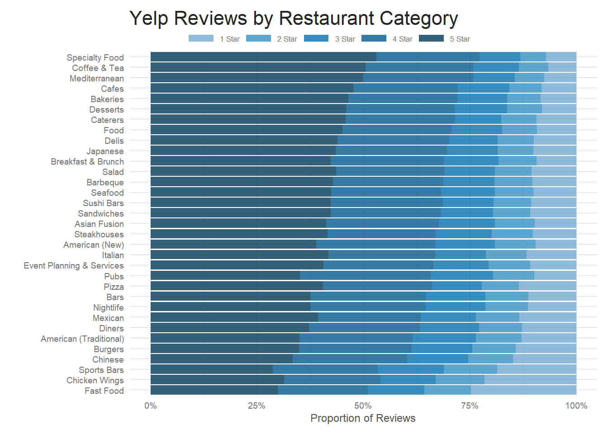
How are individual reviews distributed?
An important thing to keep in mind about the analysis from section 3.1 is that, for the most part, I am looking at restaurant level aggregation. So, for example, restaurant Foo had 2 one star reviews, 1 four star review and 2 five star reviews for an overall rating of 3.2 stars. This is great for looking at how the industry as a whole is ordered, but I’m going to be looking at individual level reviews when I build my model. I can’t tell much of anything about how reviews look at the individual level by examining them in their aggregated form. Luckily, I also have individual review level data to play with. There were ~5m reviews in the original dataset, about half of which were restaurants of some sort. That’s a pretty hefty size corpus to manage, so I randomly sampled about a 1/10th of the dataset to use for exploration.
All reviews(from the sample data)
So what sort of reviews are people leaving on Yelp?
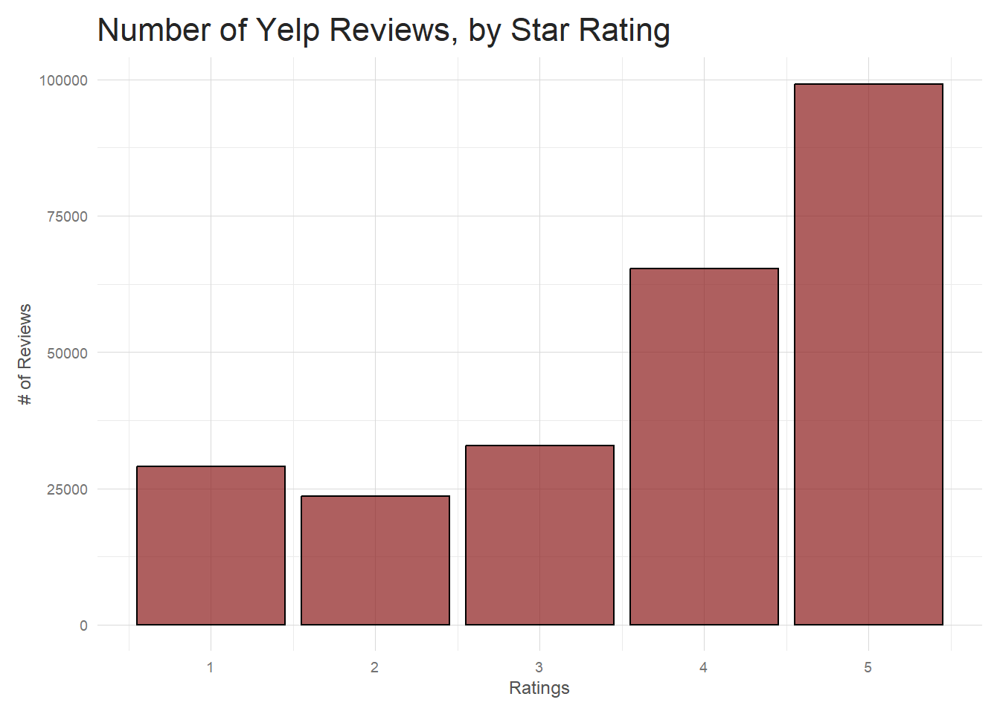
Interesting! People are actually more likely to leave good reviews, especially 5 star ones. If I think back to the overall distribution in 3.1.1 I can imagine how this glut of 4 and 5 stars reviews is moderated by the 1 star reviews to bring the average restaurant level review down to about 3.5. Just mulling over how I imagine people use Yelp, I’d imagine you see so many good reviews because a good restaurant experience is something people are excited about and probably motivated to share. A mediocre experience isn’t something–at least personally–that people are as compelled to post like a really good or bad review.
Revisiting variance, but on the individual review level
Before, we saw that certain types of restaurants had a lot more variation in their overall ratings than others. Does this hold true when we start to dig down into the individual review level? If I extract the highest variance categories on the individual review level and plot them I see some old friends from our distribution plots in 3.1.
Code
joined_df%>%
# Could use this filtering to get the exact columns as before, but they aren't strictly the highest variance at this level.
# filter(categories %in% c("Burgers", "Chicken Shop", "Chicken Wings", "Fast Food", "Hot Dogs", "Donuts"))%>%
group_by(categories)%>%
mutate(total = n_distinct(review_id), var = var(stars.y))%>%
ungroup()%>%
# Had to play around with the # of reviews to filter on here. Could be changed
filter(total >= 250)%>%
filter(var >= quantile(var, .97))%>%
group_by(categories, stars.y)%>%
summarise(total = n())%>%
ggplot(aes(stars.y, total))+
geom_col(fill = 'firebrick4', color = 'black', alpha = .7)+
facet_wrap(~categories, scales = 'free')+
my_theme()+
labs(x = 'Ratings',
y = '# of Reviews',
title = 'Yelp Ratings for Restaurant Types with \n High Variance')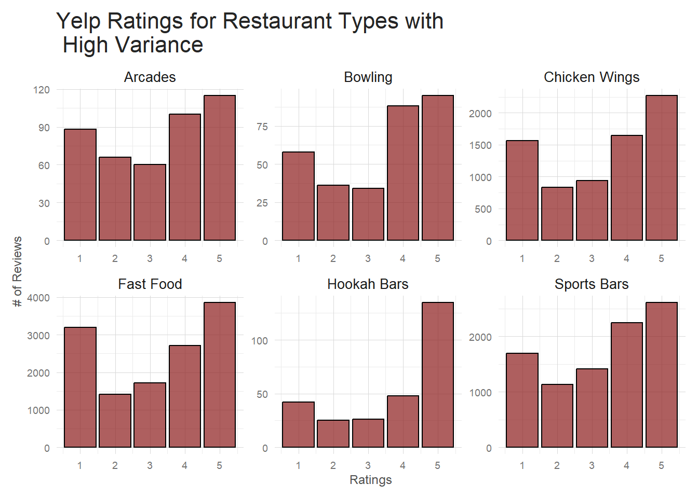
These restaurants all have significantly more 1 star reviews than a typical Yelp restaurant. It’s a much flatter plot than, for example, this group of low variance categories shown below.
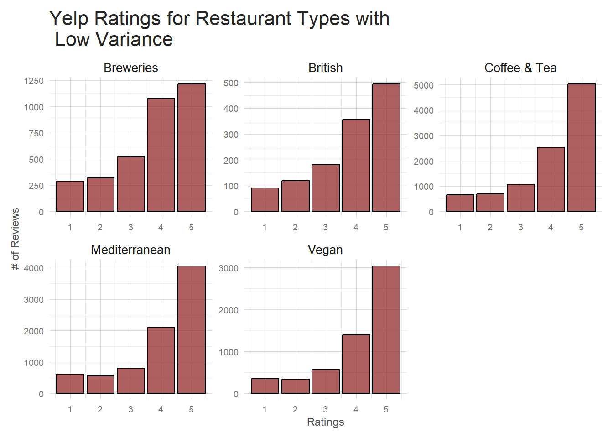
This reinforces the relationship discovered above between restaurant category and rating. We see it on both the restaurant and individual review level. This is definitely a feature I’d want to include in a more standard, tabular data sort of supervised model. I’m curious whether the text in the reviews of these various categories differs to a degree that we can observe. Further still, are these categories so different that a text based model will perform at different levels on different categories. Or to clarify by example–it’s commonly known that many facial recognition neural networks are significantly less accurate when trying to identify members of ethnic minority classes. Am I going to see similar issues when dealing with minority restaurant categories since they appear to behave differently in the way they are reviewed? Let’s look into the review text itself to see if we can gather some more insight.
Initial Text Exploration
Now that I have a basic idea how the reviews are distributed, I am going to take a brief look at the text of the reviews. First, I need to tokenize the text of the reviews. This will break the blocks of text into components. I can do this in many different ways – individual word, bigram, ngram, character, etc–and regardless of how I choose to do it, tidytext makes this process really seamless.
After tokenizing the review text, there’s almost no end to how I can analyse the text. Just offhand, I could:
- Explore review length and how it varies by category/state/date/etc.
- Look at measures of sentiment across numerous axes.
- Examine review structure by tagging parts of speech.
- Model topics in a whole host of ways–from older techniques such as Linear Discriminant Analysis(LDA) to state of the art such as topic2vec.
I’ll briefly explore a few avenues to more fully understand the data, but encourage those reading to explore further on their own and share.
Overall Review Length
A simple, but important, first look is seeing how long these reviews are. Are these quick 10 word ditties or 5000 word NYT-esque behemoths? This could completely change how I’d have to go about representing the review text when I build the model.
Code
# Tokenize review text
# all_tokens <- sample_reviews%>%
# unnest_tokens(word, text)
#
# Count up how many times each word is used in each review
# word_per_review <- all_tokens%>%
# count(review_id, word, sort = TRUE)
# Save data and load it in to save time
# TODO Make sure this works when uploading to kernel
# saveRDS(word_per_review, file = 'review_words.rds')
word_per_review <- readRDS(here::here("Data", 'review_words.rds'))
# Count total # of words used in a review and then add the date back
total_words_by_review <- word_per_review%>%
group_by(review_id)%>%
summarise(total = sum(n))%>%
inner_join(sample_reviews, by = 'review_id') |>
mutate(date = as.Date(date))
avg <- total_words_by_review%>%summarise(avg = mean(total))
# see how many words are in reviews over time
total_words_by_review%>%
group_by(monthly = floor_date(date, 'month'), stars)%>%
summarise(avg_len = mean(total))%>%
ggplot(aes(monthly, avg_len))+
geom_line()+
stat_smooth(size = .3, color = 'red')+
my_theme()+
labs(x = '',
y = '# of Words in Average Review',
title = 'Average Yelp Review Length, by Month')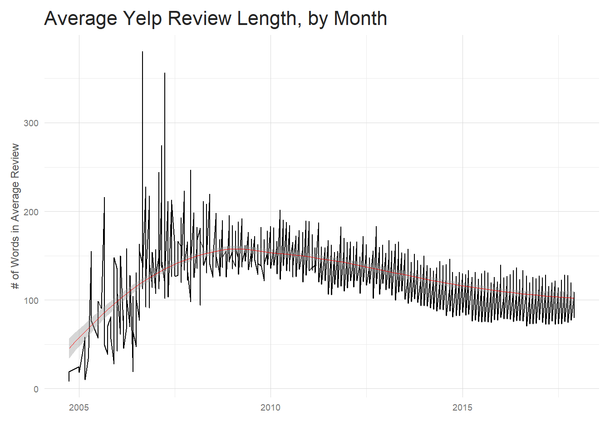
What’s going on with that mass of messy data from ~2005 to 2008? Well, Yelp was founded around the end of 2004 and, at first glance at least, the initial review length appears quite different from the current trend and significantly more varied. However, there were significantly fewer reviews starting out (obviously, since the company wasn’t as well known) and it took Yelp many years to stabilize to it’s current levels. Looking at the table below, we don’t really start to see a substantial number of reviews until 2009.
| Year | Total Reviews |
|---|---|
| 2004-01-01 | 2 |
| 2005-01-01 | 54 |
| 2006-01-01 | 319 |
| 2007-01-01 | 1220 |
| 2008-01-01 | 2904 |
| 2009-01-01 | 5115 |
| 2010-01-01 | 9194 |
| 2011-01-01 | 14730 |
| 2012-01-01 | 16944 |
| 2013-01-01 | 22563 |
| 2014-01-01 | 33000 |
| 2015-01-01 | 43328 |
| 2016-01-01 | 48544 |
| 2017-01-01 | 52082 |
Once the number of reviews written grows enough the data becomes more orderly. There has been a decline in the average review length over the past several years. The average review length sits at 108.31 words per review.
Review Length By Rating
If I zoom in a bit and look at the past two years faceted by ratings, differences start to become apparent.
Code
avgs <- total_words_by_review%>%
group_by(stars)%>%
summarise(`Average word count` = round(mean(total),2))%>%
rename(Stars = stars)
total_words_by_review%>%
filter(date >='2015-12-11')%>%
group_by(weekly = floor_date(date, 'week'), stars)%>%
summarise(avg_len = mean(total))%>%
ggplot(aes(weekly, avg_len))+
geom_line()+
stat_smooth(size = .5, se = FALSE, color = 'red')+
my_theme()+
facet_wrap(~stars, scales = 'free')+
labs(x = '',
y = '# of Words in Average Review',
title = 'Average Yelp Review Length by Rating, by Week')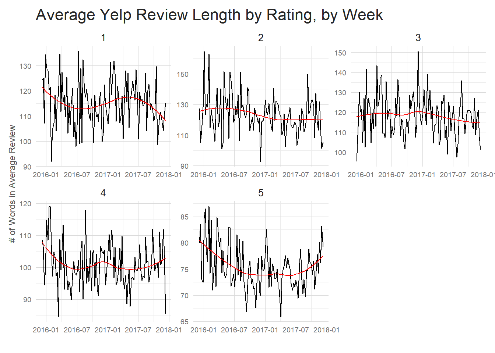
| Stars | Average word count |
|---|---|
| 1 | 126.56 |
| 2 | 136.53 |
| 3 | 129.81 |
| 4 | 112.72 |
| 5 | 86.22 |
Good reviews tend to be significantly shorter and 5 star reviews are the shortest of all by a good amount. Perhaps people like to vent when they have a bad restaurant experience, but when they have a good one they are more succinct – ie “Great Food!” could be a full review for a 5 star restaurant.
Review Length By Category
I want to briefly examine the issue discussed at the end of section 3.2.2. Am I able to discern differences in the text of reviews between categories. Using information I gathered above, I’ll filter down to reviews for a couple of the highest variance (Fast Food and Chicken Wings) and a couple of the lowest variance(Vegan and Vegetarian) categories.
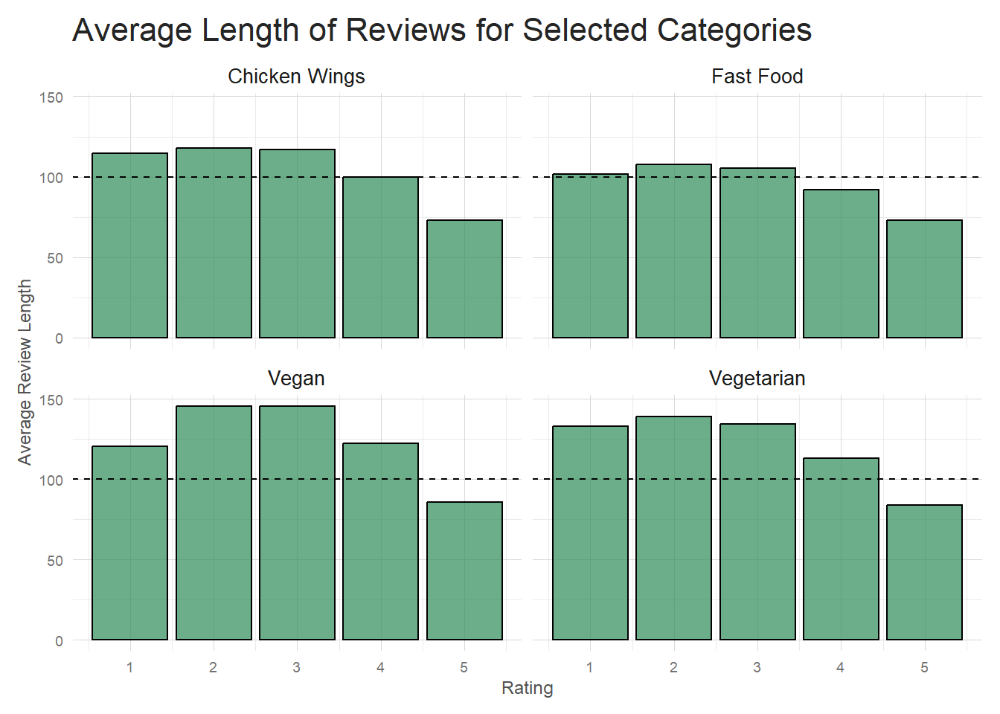
It appears that the higher variance categories (Chicken Wings and Fast Food) tend to have shorter poor reviews than our sample low variance categories. At the high end of the ratings there isn’t much difference though. This is a good start to determining if you can tell the difference between categories by review text alone. It seems like review length could be one helpful indicator.
Sentiment Schmentiment
Another useful avenue to explore for developing some understand of the reviews is doing some sentiment analysis. There are many flaws to sentiment analysis, but as a starting point it’s incredibly useful. For instance, maybe I am interested in seeing what the average sentiment looks like for various ratings. Since I already have tokenized text, that’s a simple task. I’m using the ‘afinn’ sentiment score which assigns a rating of -5 to 5 to words depending on it’s predetermined sentiment level. Words like ‘outstanding’ receive high sentiment values while ‘fraud’ or ‘shit’ are scored with very low sentiment values.
| Stars | Average Sentiment |
|---|---|
| 1 | -0.04 |
| 2 | 0.82 |
| 3 | 1.51 |
| 4 | 2.05 |
| 5 | 2.29 |
As expected, higher ratings tend to have higher sentiment scores. But I can take this a step further– perhaps I am interested in seeing how ‘service’ being mentioned affects the average sentiment. I can filter for reviews that contain the word ‘service’ and recalculate the sentiments to get an idea of how the review changes. In this case, it looks like ‘service’ being mentioned in a good review is related to having a higher average sentiment, while ‘service’ in a bad review is accompanied by a small drop in average sentiment.
| Stars | Average Sentiment |
|---|---|
| 1 | -0.09 |
| 2 | 0.79 |
| 3 | 1.53 |
| 4 | 2.14 |
| 5 | 2.42 |
Has the Average Sentiment of a Review Changed Over Time?
One fascinating area to explore is whether reviews have become more positive or negative throughout the years. If I group the reviews by month and rating, I can examine whether, perhaps, bad reviews have gotten more extravagantly negative throughout the years.
Code
word_per_review%>%
inner_join(get_sentiments('afinn'), by = 'word')%>%
inner_join(sample_reviews, by = 'review_id')%>%
mutate(date = as.Date(date)) |>
filter(date >='2009-01-01')%>%
group_by(monthly = floor_date(date, 'month'), stars)%>%
summarise(sentiment = mean(value), words = n())%>%
ggplot(aes(monthly, sentiment))+
geom_line()+
geom_smooth(color = 'red', size = .5)+
facet_wrap(~stars, scales = 'free')+
my_theme()+
labs(x = '',
y = 'Average Monthly Sentiment',
title = 'Average Sentiment of Yelp Reviews 2009-2017, by Rating',
subtitle = '(Data Grouped by Month)')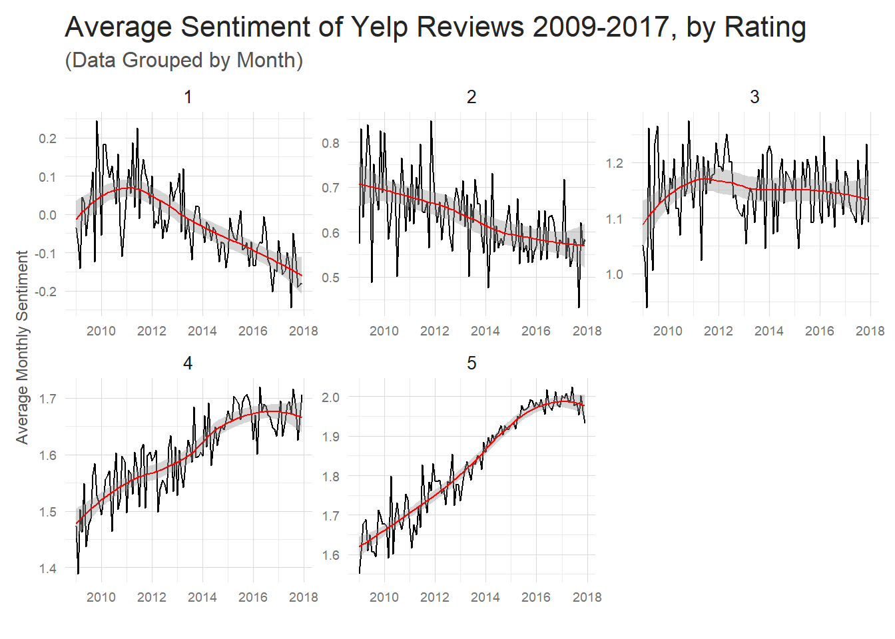
(Note: I decided to filter out reviews before 2009.) This is a pretty amazing insight. It seems that negative reviews have gotten more negative and positive reviews have gotten more positive. Interestingly, if you don’t facet this plot, the average sentiment has stayed pretty much constant since 2009. I’m a little bit suspicious of this drastic of a change in sentiment in the reviews. My gut is that the shortening length of 5 star reviews over time is giving greater emphasis to the words you’d expect in a 5 star review –amazing, fantastic, etc. So the presence of these words in shorter and shorter reviews is pushing up–or down in the case of negative words–the averages over time.
Review Length versus Review Sentiment
I can explore this a tiny bit by doing a scatter plot of individual reviews with review length on the X axis and sentiment for that review on the Y axis.
Code
length_sentiment <- word_per_review%>%
inner_join(get_sentiments('afinn'), by = 'word')%>%
group_by(review_id)%>%
summarise(sentiment = mean(value), words = n())%>%
inner_join(total_words_by_review, by = 'review_id')
length_sentiment%>%
ggplot(aes(total, sentiment))+
geom_point(alpha = .1)+
geom_smooth(color = 'red', se = FALSE, size = .5)+
geom_hline(yintercept = 0, color = 'steelblue', linetype = 2)+
facet_wrap(~stars)+
my_theme()+
labs(x = '# of Words in Review',
y = 'Review Sentiment',
title = 'Yelp Review Length vs. Review Sentiment Score',
subtitle = 'Grouped by Rating')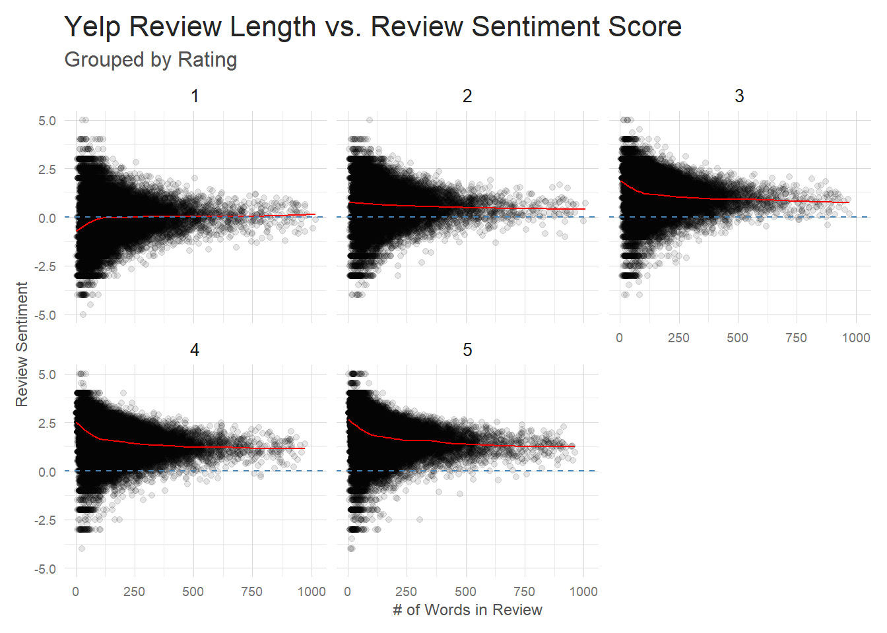
So short reviews seem to be more hyperbolic. The shorter the review the more likely it will be scored with a very high or very low sentiment rating. That seems to fall in line with what I mentioned above about a handful of very positive or negative words carrying a ton of weight in shorter reviews.
But one question you should have when looking at this plot is ‘How come 1 star and 5 star reviews both have so many high and low sentiment reviews?’ And that’s a good point. Why are we seeing low sentiment 5 star reviews at all? This is an issue with using basic sentiment analysis. ‘Feta-freaking-licious. Holy shit. That’s all I can say.’ is a 5 star review, but has a -4 sentiment score. There are several reasons for this. The ‘afinn’ sentiment dataset is relatively small and many words aren’t captured by it. This reduces the number of words that are scored, again giving more weight to those words that are scored. One of the words that is included is ‘shit’, which happens to receive a -4 score. Any human that reads this review will recognize that ‘Holy shit’ is a good exclamation in this context, but our naive sentiment scoring can’t pickup on that. This sort of sentiment analysis will also mishandle negation of words – ‘not like’ is obviously negative to us, but will be see as ‘like’ to the sentiment analysis(at least in it’s present form).
And similar things happen in the negative reviews that receive high sentiment scores. ‘Would make for an outstanding buffets for dogs, raccoons or other animals.’ is obviously a negative review to humans, but all our sentiment analysis sees is ‘outstanding’. There are a number of ways you could go about strengthening this sentiment analysis–for instance, by using bi and trigrams to gather more context from each review–but I won’t deal with that here. Since my model is a completely different NLP approach I’ll just point out the limitations and gather what information I can from the sentiment analysis.
Even with all that bad news about sentiment analysis, I can still use it to gain some valuable, subtle insights. I can see that shorter 4 and 5 star reviews tend to be very positive. Looking into those reviews, you see a lot of ‘Outstanding food, and some random sentence of praise here’ reviews. Short, sweet, and very positive. As we get longer reviews, it’s not that these ‘outstandings’ disappear, it’s that they are moderated by a plethora of other words in the longer review. It’s essentially a regression to the mean effect. You see that in the trend line drifting down to a slightly lower sentiment. Similar effects are seen in the 1 star reviews, but in the opposite direction. Reviews gradually trend more positive as the length of a bad review grows–all the starkly negative words are averaged out with more moderate sentiment words.
Average Sentiment by Category
Another step towards understanding the difference seen between categories is looking at the average sentiment of their reviews. Here, again, it’s obvious that sentiment of these high variance review restaurants is generally lower. Now it’s important to note that Fast Food and Chicken Wing restaurants on average receive lower ratings than Vegan and Vegetarian restaurants, so we’d have to control for this rating difference to see if this sentiment difference is real or is an artifact of the rating difference. I think this could be an instance where propensity score matching would help balance the dataset so we could more accurately examine the difference in sentiment rating between restaurant types, but I’ll leave that as an exercise for the reader.
For now, I can say that sentiment for Chicken Wings and Fast Food has trended down over the past several years while Vegan and Vegetarian may have seen a mild increase in average sentiment.
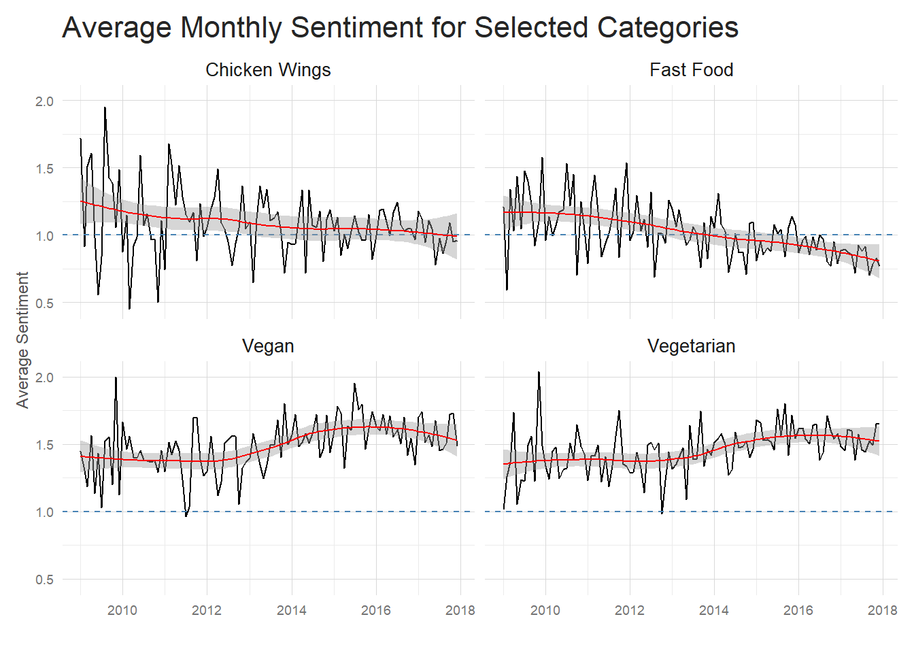
What are the most influential words in good vs. bad reviews
One last way I will examine review sentiment is to see which words have the greatest influence on the sentiment of reviews. I’ll do this by looking at the number of times that a word occurs in a review and multiplying that by that words sentiment score.
As you can see below, the contributions look quite different for each separate rating. 1 star reviews are overwhelmed by words such as bad, worst and horrible, while 5 star reviews are dominated by positive words such as amazing and love. It’s important to, again, point out that sentiment analysis by word won’t catch certain intricacies of the English language. I have a feeling if I were to look at bigrams of review text, I’d see that what actually occurs most often in 1 star reviews is ‘didn’t love’ or ‘not recommend’ rather than ‘love’ and ‘recommend’. This sort of negation is missed by word level tokenization, but could be easily captured by bigrams if you were so inclined.
Still, the visualization is quite informative. You see more and more positive influence as you go from 1 to 5 star reviews, which tells me I am capturing the general idea of a review even if I am missing some details. In general, this gives me confidence that there are actual word usage differences between ratings that my model will be able to identify and use for prediction.
Code
t <- word_per_review%>%
anti_join(stop_words)%>%
inner_join(sample_reviews, by = 'review_id')%>%
mutate(date = as.Date(date)) |>
select(-text)%>%
inner_join(get_sentiments('afinn'), by = 'word')%>%
group_by(stars, word)%>%
summarise(occurences = n(), contribution = sum(value))%>%
top_n(15, abs(contribution))%>%
ungroup()%>%
arrange(stars, contribution)%>%
mutate(order = row_number())
ggplot(t, aes(order, contribution, fill = contribution > 0))+
geom_col(show.legend = FALSE)+
facet_wrap(~stars, scales = 'free')+
scale_x_continuous(
breaks = t$order,
labels = t$word,
expand = c(0,0)
)+
coord_flip()+
my_theme()+
labs(x = '',
y = 'Contribution toward Sentiment',
title = 'Words with the Highest Contribution Towards Sentiment')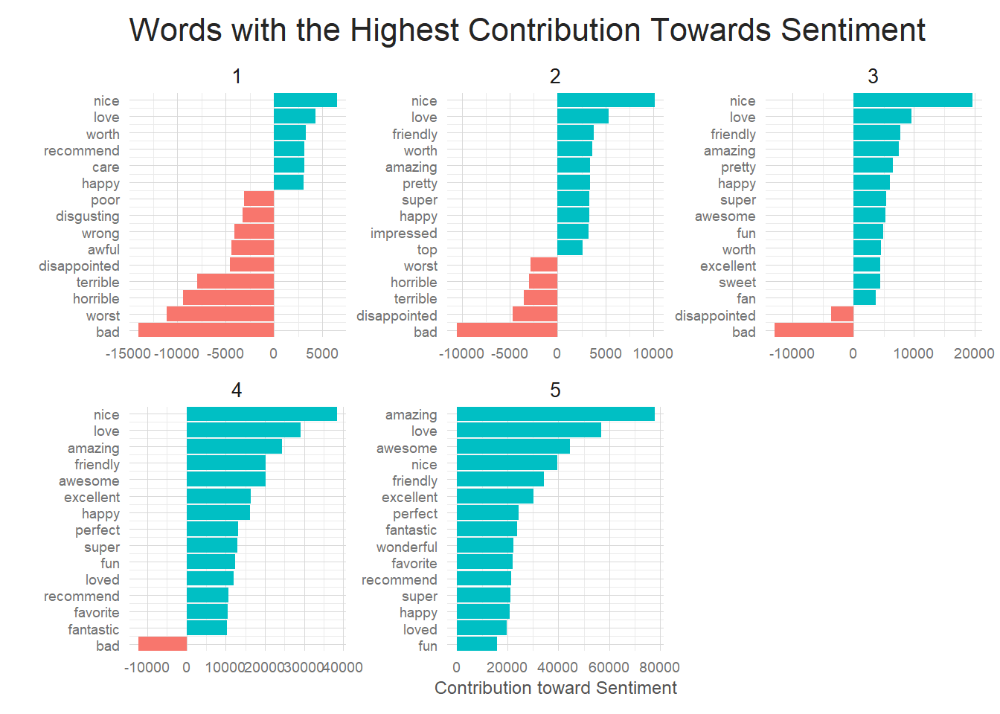
What words are influencing our selected restaurant categories?
And finally I decided to do the same sort of sentiment contribution analysis, but focus on our selected restaurant categories. The differences aren’t as noticeable here, but some word contributions still stand out. Fast food has a lot of contribution from ‘clean’ and ‘fresh’ and ‘wrong’ while those words don’t show up in any of the other 3 categories. I imagine Fast Food reviews focus on slightly different signals than other restaurants. Since fast food is standardized across restaurants, the differentiating factors are things like the restaurant being clean, or the fries being fresh, or your order being wrong. These are all things that are taken for granted–more or less–at non-fast food restaurants and so maybe these factors rise to a higher level of importance for the fast food category, resulting in their appearance in more fast food reviews.
If there are similar identifiers in other categories then it bodes well for there being textual differences amongst the different restaurant categories. They may be subtle, but hopefully our neural network will pickup on them.
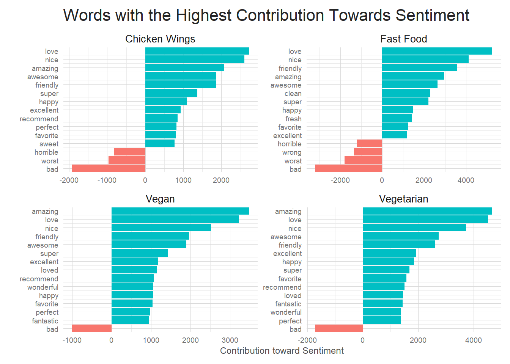
Conclusions
The Yelp dataset is huge, with an enormous range of avenues to explore, but I think I was able to get a decent handle on how Yelp reviews look through this initial exploration. Review length varies a considerable amount, but very few reviews blow up in size to the point where they will have to be handled separately. There seems to be a strong relationship between the text in the review and a restaurants rating as shown by the sentiment analysis which gives me confidence that an NLP based approach to rating prediction will be successful.
This exploration is by no means complete and there are certain areas–such as my complete neglection of restaurant locations and names as well as entire tables of data–ie user related info. But, one must pick and choose with a dataset like this when confronted with the realities of limited time.
This initial exploration is part one of my Yelp dataset series. As always, the full code for this analysis can be found here In part two I will build on this post and use review text to build a neural network to predict review ratings from the text of the review itself. Sounds like a fun challenge to me! Until next time.